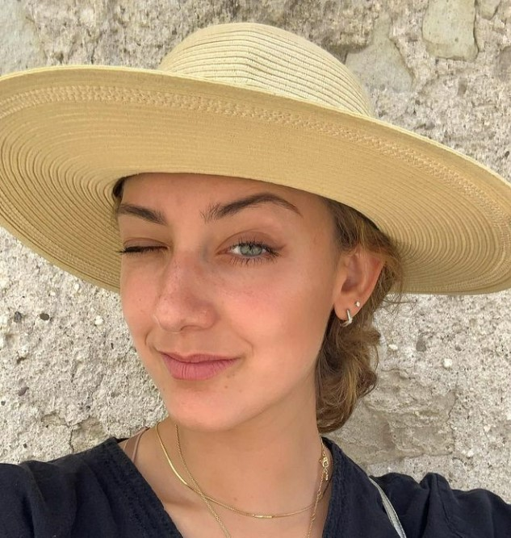
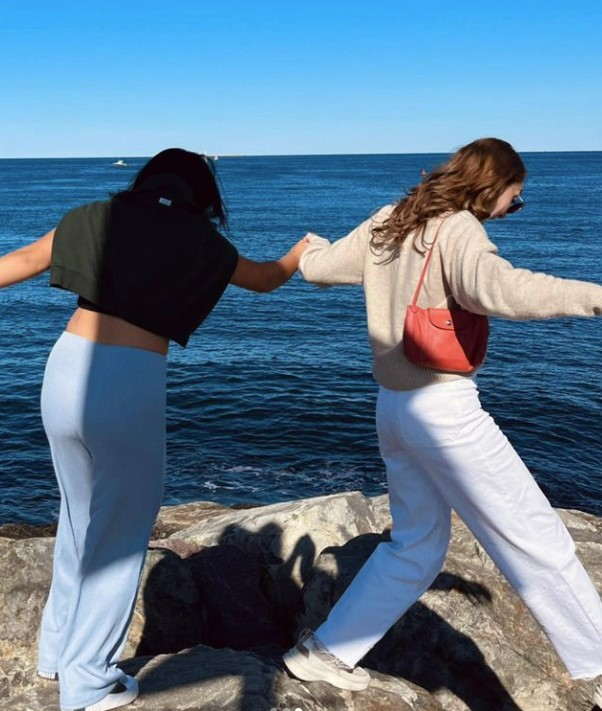

Julia Garcia, from Puebla, Mexico
Went to American Highschool of Puebla in Mexico City

When and how we met: Julia Garcia and I met through one of our best
friends Jana Godbole during our 1st semester of Sophomore year during COVID,
Fall 2020. We met at a time in our lives where we were both navigating how
to be independent and happy in our single-era. Now in Fall 2022, we are
roomates and I have never been happier to get time with her after our
individual journey's abroad in Italy.
Why Julia Garcia inspires me: Julia has an energy like no other. Her
consistent and deep passion for learning, food, family, friends, good
experiences, meeting new people and trying new things is what makes Julia,
Julia. This is what makes her a joy to be around. It is not possible for you
to be in a bad mood if you are around Garcia, her contagious smile and
laugh, sunshine energy, and upbeat personality light up a room without fail.
Her curiosity keeps me excited about life, and I am so thankful to have such
a driven but kind friend in my life.
Dec 2022 What is JG up to: Julia was born and raised
in Mexico, lived in Tennessee for a few years when she was young, came to
Boston for college, spent a summer learning how to make Mezal while
interning at a Babson run food start-up, worked for and modeled for a
well-known fashion consultant in Wellesley, went abroad to Milan, and is now
a senior at Babson College. Once she graduates she will be working full time
in Boston with BRG (Berkeley Research Group).
Hobbies:
- Food, Tacos, Tacos, Tacos!
- Travel
- Cocktail Mixology
- Fashion
- Museums & Art
- Beaches
Top 3 memories:
-
Outdoor magic: Biking on the Charles River & our Rockport Beach Trip
- Talking to Rad for 5 hours at Lolita’s
- Taking her to my hometown to eat my all-time favorite Carrot Cake
JG's Dreams: Garcia will be someone big, whether she starts her own
company, works up to a C-suite position, or ends up doing something so
unconventional and not like anything she would have ever imagined or thought
was possible. We’ve talked a lot about not wanting to just fit in the mold
of who the world expects us to be when we are adults “in the real world”,
and with the way Julia views the world with such ambition and curiosity, in
combination with her go, go, go mentality, she is bound to accomplish
anything. She has big dreams to do something big, beyond what the
business-school mold expects her to be. Julia will live up to the high
standards she holds herself to and I can’t wait to see what she does with
all that fire within her.
